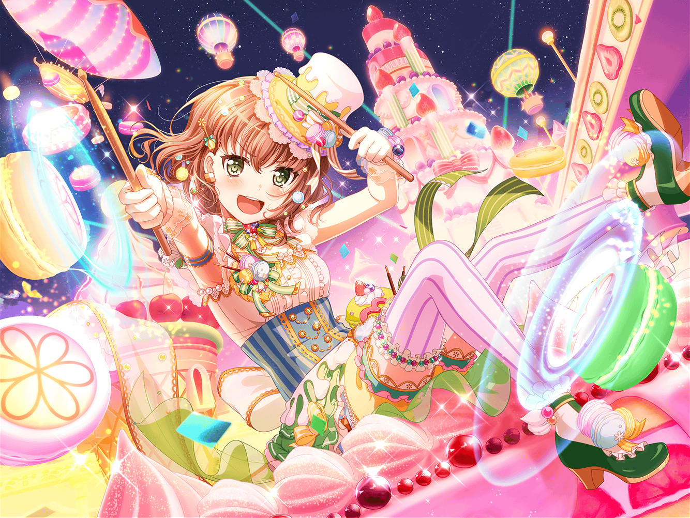

合同練習中
スタジオ
麻弥
うん、やっぱりここの美竹さんの歌いだしの前は、
もう少し強めに叩いてもいいかもですね……
香澄
すみません、麻弥さん！
ちょっと話したいことがあるんですけど、いいですかっ！？
麻弥
あ、はい！ 大丈夫ですよ！
どうしましたか？
香澄
あ、違うんです！
麻弥さんのドラム、すっごく歌いやすいなって思って！
香澄
なんかポピパでライブしてる時とおんなじ気持ちで
歌えるっていうか……安心するっていうか……
うまく言えないですけど、ありがとうございますっ！
友希那
そうね、私も大和さんのドラムは、
この合同練習で初めて合わせたとは
思えないような感覚があるわ
麻弥
フヘヘ……本当ですか？
嬉しいですね……恐縮です
彩
えへへ、麻弥ちゃんが褒められてると、
なんだか私まで嬉しくなってきちゃうよ！
香澄
でも、それってなんでだろう？ って思って……
麻弥さん、何か特別なこととかしてるんですかっ！？
麻弥
え？ そうですねー、これといって特別なことは……
彩
麻弥ちゃん、きっとあれだよ！
スコアにメモとってるやつ！
香澄
そ、それが秘訣ですかっ！？
彩
きっとそうだよ！ 麻弥ちゃんって、
みんなの演奏の特徴をすっごいメモしてるんだよっ！
友希那
演奏の特徴を……？
それは気になるわね。少し見てもいいかしら？
香澄
私も見てみたいです！
麻弥
もちろんいいですよ！
ちょっと恥ずかしいですけど……
香澄
うわぁ……！ すごーい！
どのページもびっしり書いてありますね！
友希那
これは……想像以上ね
彩
麻弥ちゃん、前に見せてもらった時より、
書き込み増えてない？
麻弥
そうですね、やっぱり練習を重ねるごとに、
気がつくことが増えてきちゃって……
麻弥
スタジオミュージシャンだった時も、
最後はいっつもこのくらい書き込みだらけに
しちゃってました……あはは
友希那
……あら？
ここに、あこの名前があるけれど、これって……？
麻弥
ああ、それはですね。
ジブン、みなさんの音源を聴いて、それぞれのバンドの
ドラムの特徴を調べたんです
麻弥
例えばあこさんは、バスドラをジブンより
強めに叩くことが多かったり、山吹さんは
スネアのロールのキレがすごくよかったりして
麻弥
みなさんそれぞれの音があるんで、
ボーカルのパートによって、そのバンドの雰囲気に
寄せてみようと思って
香澄
へえー！
だから麻弥さんのドラム、安心して歌えたんですねっ！
彩
わ、私なんてそんなことにも気づけなかったよ～……
麻弥
あ、本当ですか彩さん！
ジブン、それを聞いて安心しました！
彩
え、安心ってどういうこと？
麻弥
他のボーカルの方が気づいてしまうぐらい変えてしまうと、
お客さんも違和感を覚えてしまいますから。
そうならないくらいの変化にしたかったんです！
彩
すごい……麻弥ちゃん、そこまで考えてたんだ……
友希那
でも大和さん、そこまでするのは
さすがに大変だったんじゃない？
麻弥
んー、そうですね。
確かにちょっと大変だったかもしれないです！
……けど
麻弥
ジブンはパスパレ代表としてだけじゃなくって、
各バンドのドラマーを代表して、合同ライブに出てますから！
なるべくみなさんの想いを込めて、挑みたかったんです！
香澄
……ま、麻弥さん～～～！！！
ぎゅ～～～っ！！！
麻弥
わっ！ く、苦しいですよ、戸山さん！
どうしたんですか！？
香澄
今の話、さーやにも教えますっ！
絶対ぜーったい喜んでくれると思いますっ！
友希那
……大和さん
麻弥
な、なんですか湊さん？
友希那
あなたのその音楽に対する真摯な姿勢は、
私が思っていた以上だったわ
友希那
もしあこに出会っていなかったら、
Roseliaに入ってもらいたかったくらい
麻弥
ふ、フヘヘ……そんな風に言ってもらえるなんて、
ジブン、光栄です！
彩
ゆ、友希那ちゃん！
麻弥ちゃんを取っちゃダメだからね～！
彩
麻弥ちゃん！
どこにも行かないでねっ！？
麻弥
あはは、心配しなくたって大丈夫ですよ、彩さん。
ジブンはPastel＊Palettesの大和麻弥ですから！